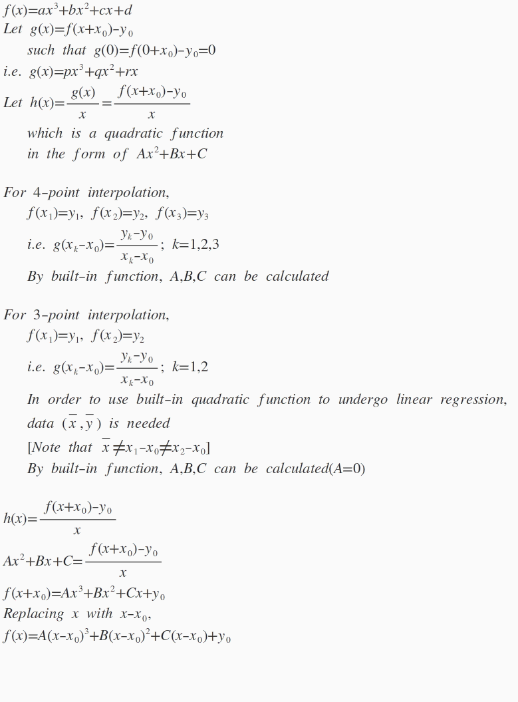

四點拉格朗日插值多項式(II)
更新日期: 2012年5月11日
程式由網友roviury提供。
程式需要在 REG Quad 模式下執行，因此在選擇新程式位置後，按 5 → 2 選用REG Quad模式。
注意: 藍色的英文字為統計模式中的變數(n 按 shift 1 3 ，x為平均x 按 shift 2 1 1，y為平均x 按 shift 2 1 → 1，，a 按 Shift 2 1→ → 1，b 按 Shift 2 1→ → 2，c 按 Shift 2 1→ → 3，ŷ 按 Shift 2 1 ← 2)。
第一個程式 (65 bytes)
?→A: ?→B: ClrStat: Lbl 1: ?→C:
?→D: C - A: Ans , Ans-1(D - B DT: n<3 => Goto 1:
c◢ b - 3AnsA◢ a - bA+ AnsA◢ B - A(-Aŷ
第二個程式 (82 bytes，程式亦可以計算三點拉朗日格插值多項式)
?→A: ?→B: 1: ClrStat: While Ans: ?→C: C - A:
If Ans: Then ?→D: Ans , Ans-1(D - B DT: A→C:
Else x , y DT: IfEnd: n<3: WhileEnd:
c◢ b - 3AnsA◢ a - bA+ AnsA◢ B - A(-Aŷ
例題1: 求 (0 , - 4), (1 , - 4)、(2 , 2) 及 (3 , 26)四點的拉格朗日插值多項式。
按 Prog 1 再按 0 EXE - 4 EXE 1 EXE - 4 EXE 2 EXE 2 EXE 3 EXE 26 EXE
(顯示x3的係數為2) EXE (顯示x2的係數為 -3)
EXE (顯示x的係數為 1) EXE (顯示常數項為 - 4)
所以拉格朗日插值多項式為 2x3 - 3x2 + x - 4
計算完結後按 MODE 1 返回正常計算模式。
例題2: 求過點 (0 , 5), (1 , 4) 及 (-1 , 10)三點的拉格朗日插值多項式。
注意: 只適用於第二個程式
按 Prog 1 再按 0 EXE 5 EXE 1 EXE 4 EXE
- 1 EXE 10 EXE EXE (不輸入數值代表計算三點拉格朗日插值多項式 ，顯示x3的係數為0)
EXE (顯示x2的係數為 2) EXE (顯示x的係數為 -3) EXE (顯示常數項為5)
所以拉格朗日插值多項式為 2x2 - 3x + 5
計算完結後按 MODE 1 返回正常計算模式。
註: 基於計算方法本身限制，輸入的四點中有任何兩點的x座標相同，程式會出現 Math ERROR，不過若果第三點的x值與第四點的x值相等時，第二個程式會自動假定是計算三點拉格朗日插值多項式，因此亦不能輸入第四點的y值。
附錄: 程式計算數學原理 (由網友roviury原創設計及提供)

返回 CASIO fx-50FH、fx-3650P II、fx-50FH II及fx-50F PLUS 程式集